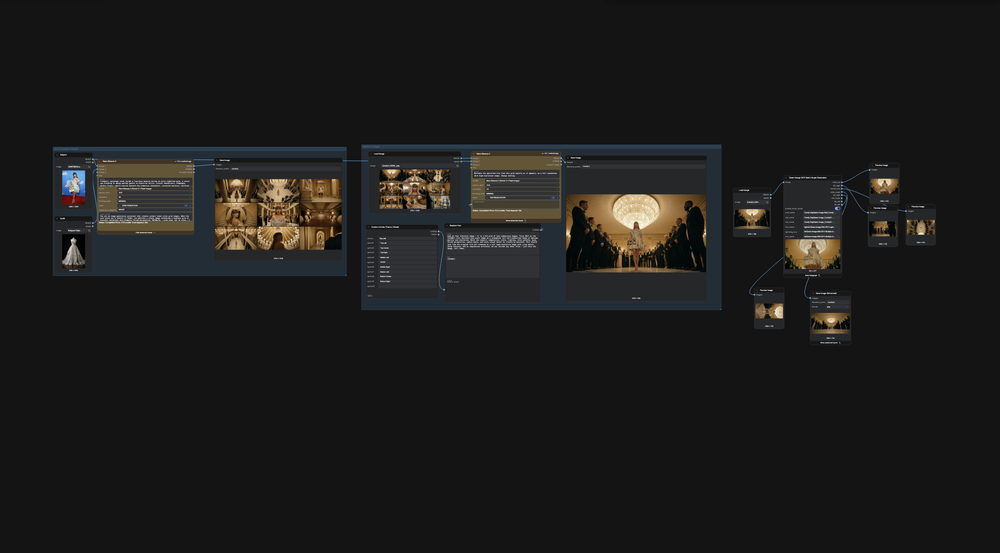

ComfyUI · Storyboard Generation · Frame Extraction · Production Automation
After testing most of the major image generation platforms for storyboarding and visual development, a recurring problem became clear: these tools are optimized for producing a single beautiful image, not for the realities of production workflows. A common approach for storyboarding is generating contact sheets or image grids. They are fast to review and let you explore multiple shot ideas in a single generation. The problem starts after generation is complete.
Most platforms output a single grid image, which means every frame has to be manually cropped, separated, renamed, and organized before it can actually be used in a storyboard. On larger projects this quickly becomes repetitive, time-consuming work that adds friction to the creative process. The generation is the easy part. The cleanup is where the time goes.
Workflow
That led to building a ComfyUI workflow focused specifically on storyboard generation and extraction. The workflow generates storyboard-style contact sheets from prompts and references, automatically separates the resulting frames, preserves image quality, and outputs production-ready storyboard panels without requiring manual cropping. By moving the process into ComfyUI, the workflow gains significantly more control over generation parameters, prompt structure, reference conditioning, and downstream processing than any commercial platform allows.
What started as a quality-of-life fix became a useful production tool. Instead of treating image generation as the final output, the workflow treats it as one step in a larger storytelling pipeline, reducing manual production work and enabling faster iteration across multiple concepts and shot sequences.

Testing at the Edges
I was also interested in testing models under conditions that are difficult to evaluate on commercial platforms. This included large crowd scenes, highly detailed cinematic compositions, public figure references, complex staging, and edge cases where platform-level restrictions make it hard to understand what a model is actually capable of.
For example, I used images of Taylor Swift alongside prompts involving large-scale crowd environments, concert-like staging, and complex cinematic coverage to evaluate how different systems handled public figure references, scene complexity, and storyboard consistency. The goal was not content generation itself but understanding model behavior, controllability, and platform limitations under realistic production conditions. Building inside ComfyUI provided the flexibility to run these tests without hitting platform guardrails that would otherwise obscure the model's actual capabilities.
What I Learned
The biggest bottleneck in AI-assisted storyboarding is often not generation quality but workflow quality. Small pieces of manual work repeated hundreds of times can quickly outweigh the time saved by faster generation.
The testing also reinforced how important controllability is for production work. Models perform very differently when asked to handle complex scenes, large crowds, recognizable public figures, or highly specific cinematic compositions compared to standard prompts. Understanding those behaviors requires a system flexible enough to isolate and test them, which is what working directly in ComfyUI makes possible.